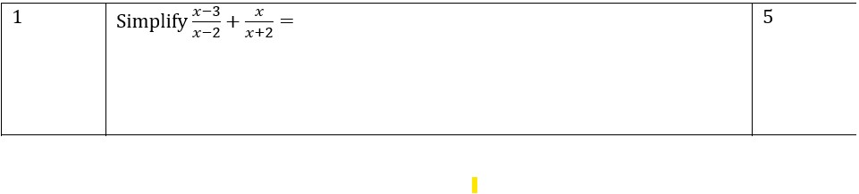

Baseline Test Question
1
ℹ️

Workings
Answer
Previous
Next
Show your working for all your questions. You will not get full marks if you do not show working out for questions, excluding questions 3c and 8a.
This test is 40 minutes long
This test is out of
35
.
You
may
use a calculator in this exam.
There are 7 bonus points, which will be marked as
BONUS POINTS
Attempt to answer all questions.
When submitting your answer:
For main operations
Addition (+)
Subtraction (-)
Multiplication (*)
Division (/)
Fractions – frac(numerator, denominator)
Exponentials - exp(base, power)
Just write Pi as Pi
Vectors – vector(x component, y component)
PREV
NEXT